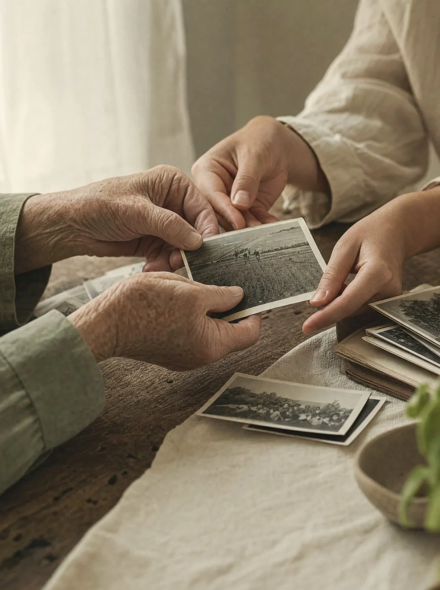
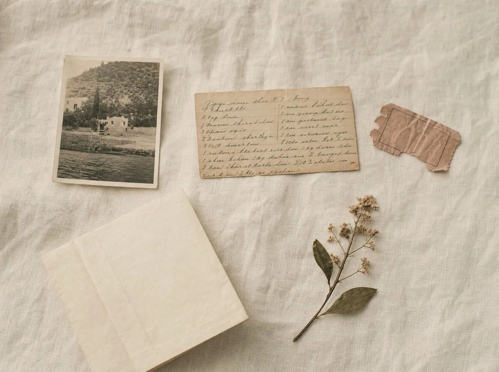
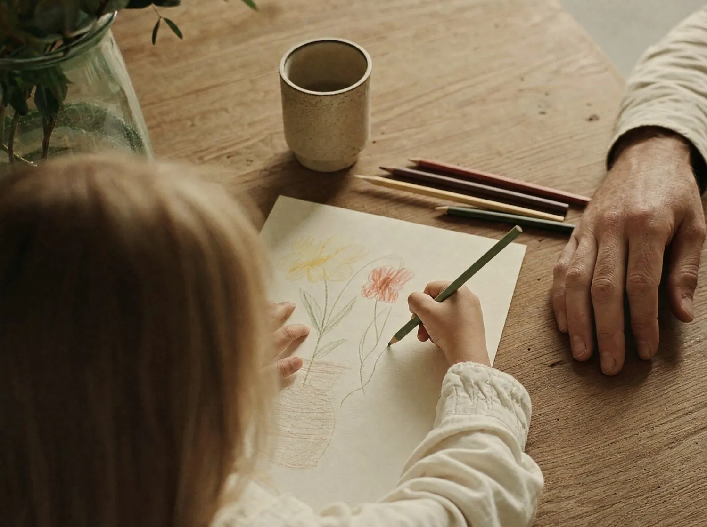
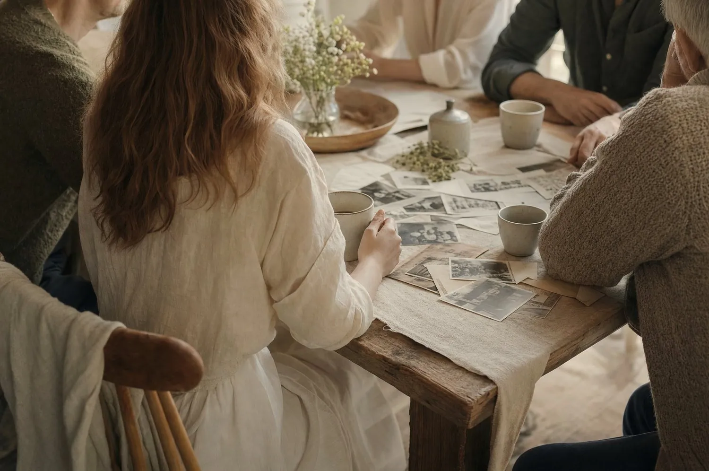

A guided gathering to create, remember, and honor a life together.
The Remembering Room is an opportunity to slow down together. Through storytelling, photographs, handwritten notes, and creativity, each person contributes one page that becomes part of a shared memory book for the family.
There is no artistic ability required.
There is no right way to remember.
Our gathering will last approximately three hours.
During our time together we will —
All art materials are provided.
No artistic experience is necessary.
If possible, please bring one or two of the following —

Choose one or two to inspire your page —


A little preparation makes the room feel gracious.
Here is all you need —